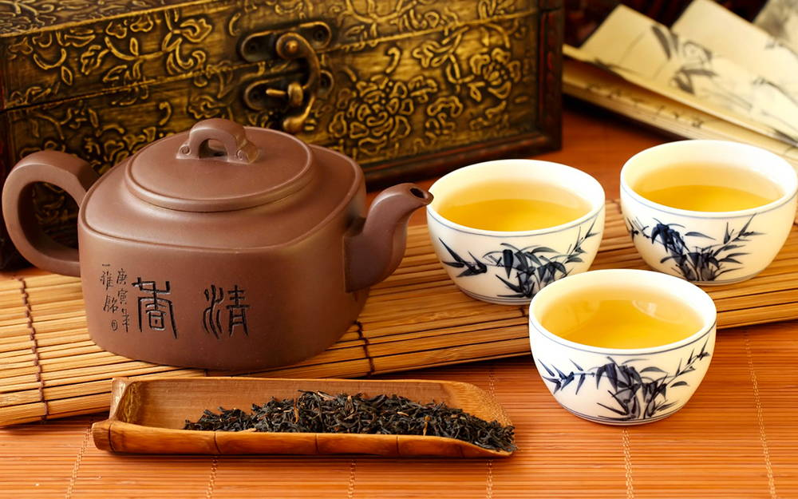

POVIJEST
Povijest počinje prije više od 4 tisuće godina u vrijeme kineskog cara Shen-Nonga. Naime, on je kao i inače odlazio na lovačke izlete te htio prokuhati nešto riječne vode u posudi kada mu je vjetar donio list stabiljke čaja koja je rasla u blizini. On je iz znatiželje popio nekoliko gutljalja tekućine koja je već promijenila boju i dobila miris. Napitak ga je oduševio i nedugo zatim je osjetio osvježenje i nestanak umora.
Ipak, kao svakodnevne uživatelje pijenja čaja možemo navesti budističke monase koji su čaj smatrali napitkom meditacije (što je jedan od razloga za uzgoj pretežno u vrtovima budističkih samostana).
Prvi opis spremanja čaja datira iz 780. godine kada ga je napisao kineski pjesnik Lu Yii koji razvija novu metodu spremanja čaja, naročito zelenog. Do toga vremena obično se čaj spremao tako što se svježe ubrani listovi biljke usitne u jednom avanu i pomiješaju u čvrstu masu s šljivinim sirupom te se potom zajedno sa rižom uvaljaju i prešaju u jedan čvrsti kolačić koji se tako mogao duže vremena čuvati. U željeno vrijeme mogao se i ubaciti u vodu s rižom ili pak korom marelice ili sa lukom spremati svojevrsnu čajnu juhu. Nova metoda je značila usitnjavanje listova biljke čaja do sitnoga praha koji se kasnije koristio za spremanje osvježavajućeg napitka. Pijenje čaja je postajalo sve popularnije tako da je već negdje prije 1000 godina čaj postao dio svakodnevnog rituala u cijeloj Kini. Ming dinastija (koja je trajala 1368.-1644. godine) donijela je sljedeći novi način spremanja čaja. Listovi nisu više bili usitnjeni da bi nastao prah, nego jednostavno cijeli listovi prelijevani vrelom vodom.
Japansko spremanje čaja
Vjeruje se da se tradicija pijenja čaja prvo proširila na Tibet gdje ga je donio sin jednog tibetanskog kralja u formi prešanih cigli i kolačića, a ta se tradicija očuvala i dan danas na Tibetu. Širenje se nastavilo prema Japanu gdje ga je donio jedan japanski monah u formi praha u 12. stoljeću. U Europu je čaj došao preko arapskih trgovaca, vjerojatno 13. ili 14. stoljeću, ali do danas o tome nema očuvanih pisanih zapisa do 1610. godine kada je u tovaru jednog broda nizozemske Istočno-indijske kompanije u Europu dovezen zeleni čaj porijeklom iz Japana. Koliko se Europljanima svidjela ta tradicija najbolje se odražava kod Engleza, koji su i danas poznati kao ljubitelji čaja. Zbog visoke cijene, u početku su samo polemici i drugi imućni građani mogli sebi dopustiti kupiti čaj, no, usprkos visokoj cijeni, čaj je postajao sve popularniji. Nakon svađe sa kineskim liferantima koji su kao monopolisti stalno dizali cijene, Englezi su od 1880. godine počeli uzgajati čaj u njihovim bivšim kolonijama u Indiji i Cejlonu, današnjoj Šri Lanki. Do tada u Europu je stizao uglavnom samo zeleni kineski čaj. Englezi su listove čaja ubrane u svojim kolonijama puštali da izvjesno vrijeme fermentiraju te je tako dobivan takozvani crni čaj koji je više odgovarao okusu Europljana.